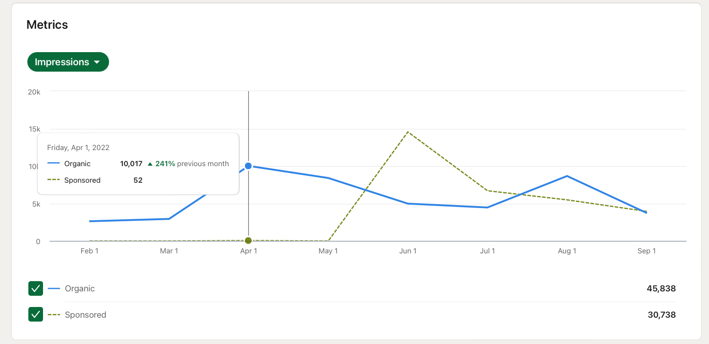
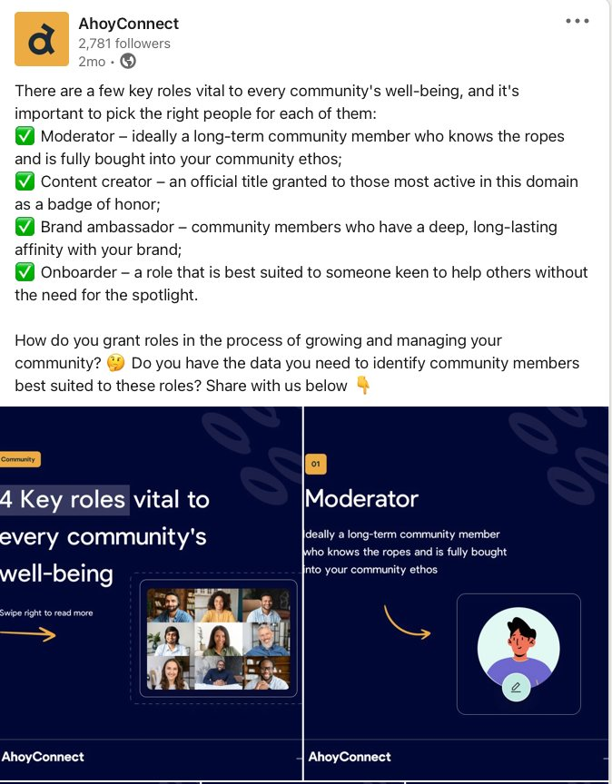
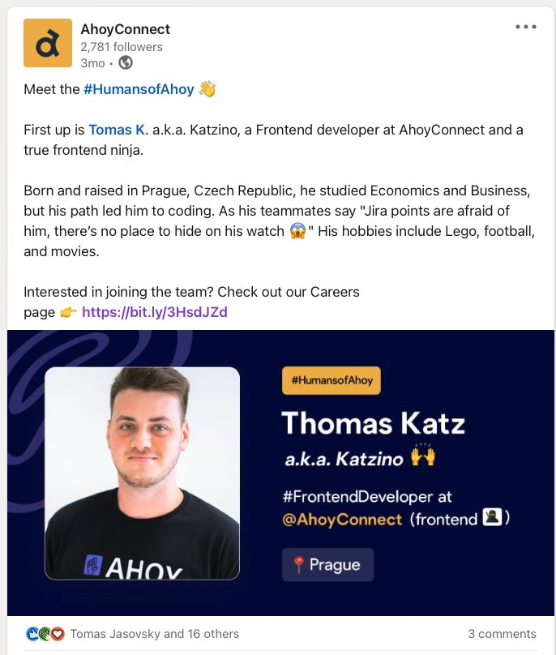
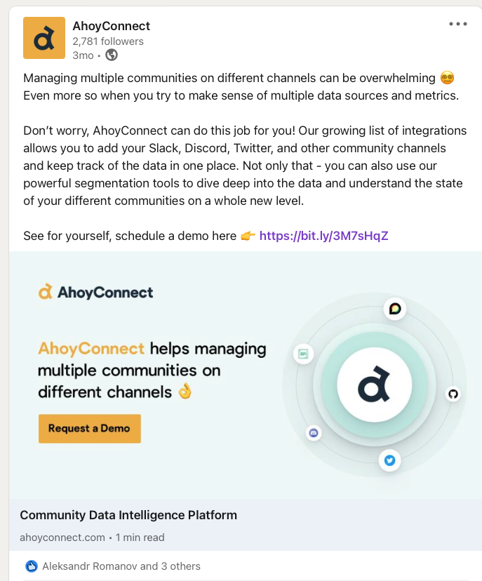
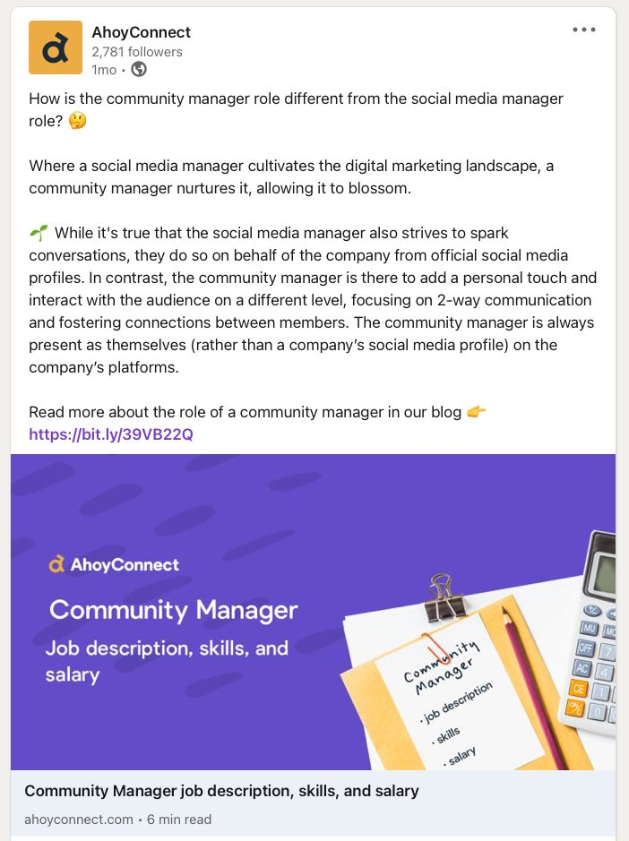
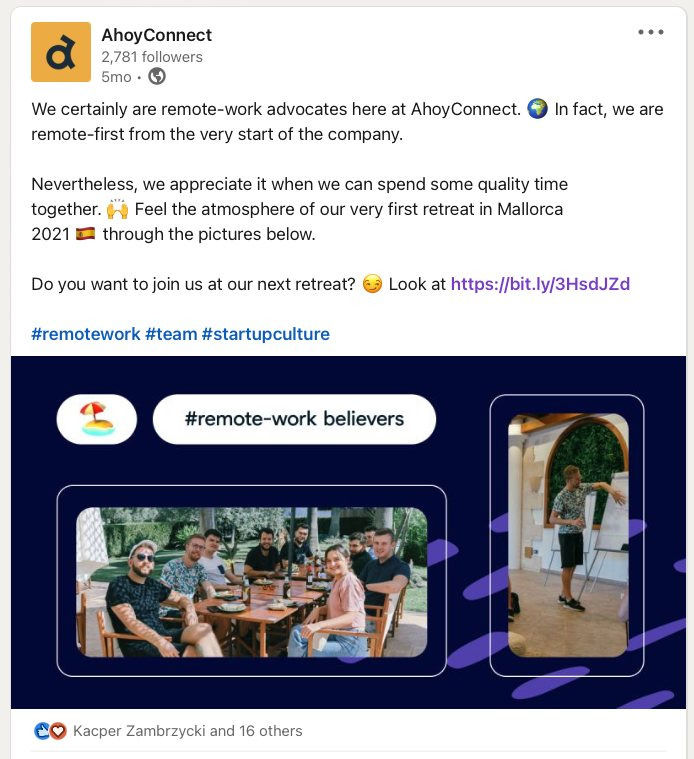

A content system for AhoyConnect, a data intelligence platform for community managers: six content pillars, a weekly cross-channel calendar, and LinkedIn ads that tested what got community builders to click.

AhoyConnect brings data from Slack, Discord, Twitter and other community channels into one place, so community managers can understand and grow their communities.
The audience is niche and the product is technical. Social had to build credibility with community builders, show the remote-first team behind the product, and send the right people to the website, without a big content team.
I planned the content strategy, built the weekly calendar and created the content.
Each weekday has a pillar, so the mix stays balanced and nobody starts the week wondering what to post. The same plan runs across LinkedIn, Twitter and Facebook.
Carousels that teach (“4 key roles vital to every community”), #HumansofAhoy team spotlights, blog teasers and product posts with a clear demo call to action.
Tested meme-style and data-led creatives to drive traffic, then retargeted website visitors with existing content: $1.24 per visit, against $4.90 from cold audiences.




